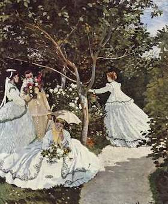
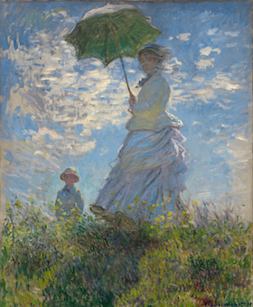
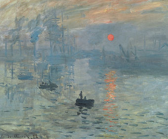
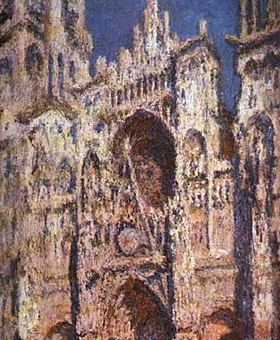
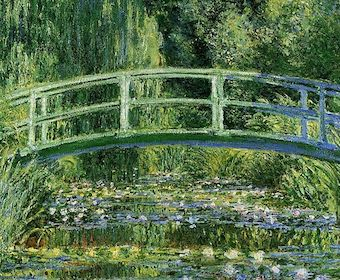
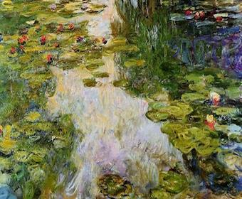
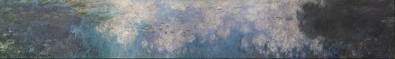

| Women in the Garden (Femmes au jardin) |
Madame Monet and Her Son (Impression, Sunrise) |
Impression, Sunrise (Impression, soleil levant) |
|---|---|---|
|

|

|

|
| Monet’s technique of “en plein air” painting was hard at work on this painting. Because it necessitated that he work from the same point of view as he painted, he dug a trench for the bottom half of the painting to sit in while he painted the top. His model for the women of the painting was Camille Doncieux, who would later become his wife. To finish the dresses in the most fashionable style. [1] | Monet's light, spontaneous brushwork creates splashes of colour. Mrs Monet's veil is blown by the wind, as is her billowing white dress; the waving grass of the meadow is echoed by the green underside of her parasol. A boy, the Monets' seven-year-old son, is placed further away, concealed behind a rise in the ground and visible only from the waist up, creating a sense of depth. [2] | The painting is credited with inspiring the name of the Impressionist movement. From the painting's title, art critic Louis Leroy coined the term "Impressionism", which he intended as disparagement but which the Impressionists appropriated for themselves.Impression, Sunrise depicts the port of Le Havre, Monet's hometown. [3] |
| Rouen Cathedral, Full Sunlight (Série des Cathédrales de Rouen) |
Water Lilies and the Japanese Bridge (Nénuphars et Pont japonais) |
Water Lilies (Nymphéas) |
|

|

|

|
| The paintings in the series each capture the façade of the Rouen Cathedral at different times of the day and year and reflect changes in it's appearance under different lighting conditions. The Rouen Cathedral paintings, more than thirty in all. For Monet, the effects of light on a subject became as important as the subject itself. Like his other series (such as the famous Water Lilies). [4] | Water Lilies and Japanese Bridge represents two of Monet’s greatest achievements: his gardens at Giverny and the paintings they inspired. Monet moved to Giverny in 1883 and immediately began to develop the property. He transformed the site into an inspired vision of cool greens and calm, reflective waters, enhanced by exotic plants such as bamboo, ginkgo, and Japanese fruit trees and a Japanese footbridge. For him, the gardens were both a passion and a second artistic medium. [5] | The paintings depict his flower garden at his home in Giverny, and were the main focus of his artistic production during the last thirty years of his life. Monet was exceptionally fond of painting controlled nature: his own gardens in Giverny, with its water lilies, pond, and bridge. Many of the works were painted while Monet suffered from cataracts. Water Lilies is a series of approximately 250 oil paintings. [6] |
| The Water Lilies (Les Nymphéas) |

|
|---|
| During the 1920s, the state of France built a pair of oval rooms at the Musée de l'Orangerie as a permanent home for eight water lily murals by Monet. The exhibit opened to the public on 16 May 1927, a few months after Monet's death. Sixty water lily paintings from around the globe were assembled for a special exhibition at the Musée de l'Orangerie in 1999. The paintings are on prominent display at museums all over the world, including the Princeton University Art Museum, Musée Marmottan Monet, the Musée d'Orsay in Paris, the Metropolitan Museum of Art, Museum of Modern Art in New York, the Art Institute of Chicago, the Saint Louis Art Museum, the Nelson-Atkins Museum of Art in Kansas City, Missouri, the Carnegie Museum of Art, the National Museum of Wales, the Musée des Beaux-Arts de Nantes, The Toledo Museum of Art, the Cleveland Museum of Art, the Portland Art Museum and the Legion of Honor. In 2020, The Museum of Fine Arts, Boston celebrated its 150-anniversary with some of Monet's Water Lilies paintings. [7] |
Reference